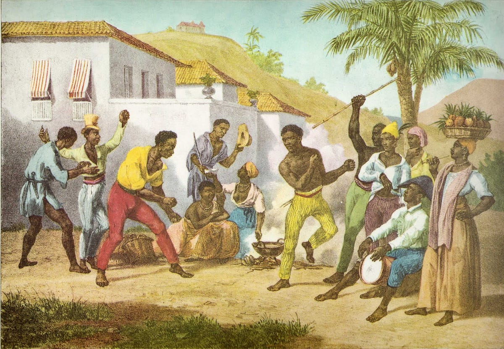

História
O Dia da Consciência Negra é comemorado em 20 de novembro, a data da morte de
Zumbi dos Palmares. O dia representa a luta do povo negro contra o racismo e a
opressão desde o período colonial, além de destacar a importância da cultura afro-brasileira.

Zumbi dos Palmares
Zumbi foi líder do Quilombo dos Palmares, o maior quilombo da história do Brasil.
Símbolo de resistência, coragem e liberdade, Zumbi lutou contra a escravidão e se tornou
um dos maiores ícones da luta do povo negro.

Importância da Data
A data reforça a necessidade de combater o racismo estrutural, valorizar a história negra e
reconhecer as contribuições culturais, sociais e políticas do povo negro na construção do Brasil.
É um dia de reflexão, respeito e educação.